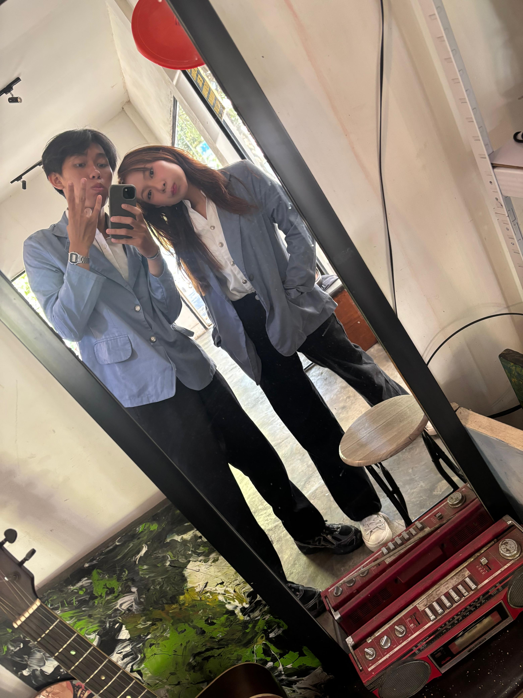

a little break for you ✳a small corner of the internet
a little care
from me to you
✳
a note for your heavy days
For Jeannette Liow.
because KKT has been
a little too much lately.
from someone who knows you've had a rough day.
take your time. there's no rush.
made with care, somewhere during KKT.
a pause, just for you
hey, you.
I know these past few days
haven't been easy.
so I made you a tiny place where
you don't have to do anything.
stay here for a bit ↓
no tasks. no annoying groupmates. just a little breathing room.
✳
first, let me say this
I know you're tired.
jojo yakin akhir-akhir ini jenet capek.
jojo tahu banget banyak hal yang bikin jenet kesel selama KKT.
dan mungkin ada sesuatu yang bikin jenet kesel tapi jenet ga bisa buat
apa-apa.
jadi sebelum lanjut,
Jenet ga perlu
pikir pikir hal lain disini.
a little honesty
also... there's something
I want to say.
jojo juga mau minta maaf.
selama KKT ini mungkin jojo belum bisa support jenet semaksimal yang
jenet harepin.
kadang jojo mungkin ga tahu harus bilang apa, ato malah salah
bilang.
kadang jojo ga selalu ada di waktu yang tepat.
mungkin ada beberapa momen di mana jojo harusnya bisa lebih peka
atau lebih hadir buat jenet.
tapi percayalah bukan berarti jojo ga peduli.
jojo pengen jenet terus seneng, termasuk waktu jojo sendiri ga tahu
harus ngapain .
jadi website kecil ini mungkin ga nyelesain apa-apa.
tapi anggap aja ini salah satu cara kecil jojo bilang:
I'm still here.
with care, me.
okay.
enough serious stuff.
Torang santai-santaii duluuu.
untungg ada seseorangg yang pass for situasii sekarangg. ↓
a little soundtrack for your break
♫
MUSIKKK!!!
so boleh jo dpe serius'. sekarang dengerin lagu dulu.
take a breath. stay for a song.
something to look forward to
Minggu ini, kita keluar dulu.
hari minggu torang ba jalan duluu tohh.
until our little date.
00hari00jam00menit00detik
waktunya jalan bareng :)
can't wait to see you.
meet your support team
Emergency Dog Therapy
medically unproven.
emotionally effective.
tap a photo. he's listening.
a tiny check-in
okay.
current status?
whatever it is, there's room for it here.
for the very specific KKT problems
kesel sama korpos?
kepanasan juga?
oke. dua keluhan ini punya tempat sendiri.
01 / tempat buang kesel
bonk the korpos boti.
korpos hari ini ngeselin lagi? titip keselnya ke boneka ini dulu.
BONK!
tap bonekanya. boleh berkali-kali.
0 bonk tersalurkan
di web dulu aja ya, abis penarikan baru langsung.
boneka virtual.
02 / angin khusus buat lu
posko panas banget?
trg mulai dari kipas dulu. kalo kurang dingin, trg upgrade truss.
level 1 / kipas
kipas dulu.
anginnya virtual, perhatian jojo beneran. anjayyy
little moments, kept close
My Favourite Photos of You
or more accurately,
some of my favourite versions of you.
ordinary moments. a very extraordinary you.
a few things to keep
things I hope you
remember today.
01
Wajar bangett kalo jenett capekk terus marah-marah selama kkt ini
02
Jenet punya jojo sama banyak temen yang siapp support jenett
03
KKT itu bentar lagi kelarr
04
i love you.
dan kalau semuanya terasa terlalu ramai,
please remember that
somewhere,
there's someone who's always rooting for you.
yes, that's me. ↖
no judgment, by the way
masih kesel?

you & me.
still figuring things out.
one last thing
I can't promise I'll always
know the right thing to say.
but I'll keep trying to be someone you can come back to.
sorry if I haven't been the best support lately.
I hope I can do better.
anyway.
you survived today.
that's enough for me.
and until things feel a little easier,
you have:
this tiny website,
mollies,
and jojo.